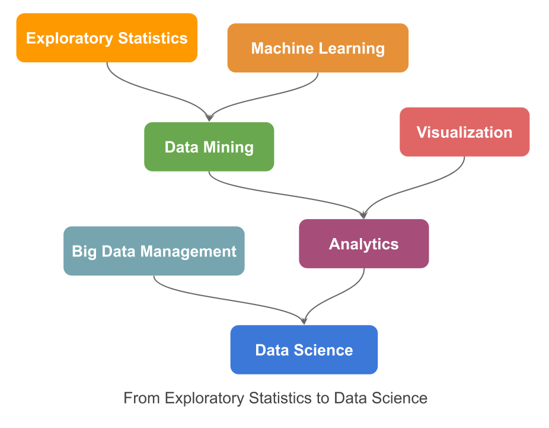

From “L’Analyse des Données” to Data Science
“When the Lord created the world and people to live in—an enterprise which according modern science, took a very long time—I could well imagine that He reasoned with Himself as follows: “If I make everything predictable, these human beings, whom I have endowed with pretty good brains, will undoubtedly learn to predict everything, and they will thereupon have no motive to do anything at all, because they will recognize that the future is totally determined and cannot be influenced by any human action. On the other hand, if I make everything unpredictable, they will gradually discover that there is no rational basis for any decision whatsoever and, as in the first case, they will thereupon have no motive to do anything at all. Neither scheme would make sense. I must therefore create a mixture of the two. Let some things be predictable and let others be unpredictable. They will then, amongst many other things, have the very important task of finding out which is which.”
E.F. Schumacher. (Small is beautiful, 1973)
Observation is our first human activity. Observation of our surrounding world had been the first approach to unveil the signals of the existing relationships, the first paradigm of Science. However, in our perceptual world, observed data is largely contaminated by random noise, making it hard to discover the true models. George Box, in his paper Science and Statistics (JASA, 1976), synthetized in a simple diagram how learning in science occur, not by just mere theoretical speculation, neither by just observation of practical facts, but rather by a motivated iteration process between the theoretical world of ideas, hypothesis, or models on one hand; and the real world of facts, events, data, on the other.

From observed data, a hypothesis may be conjectured, which it would be tested by an appropriate design, where the analysis of the collected data may led to a modified hypothesis, which in turn it would be tested by a new design …, and then, by iteration of these inductive/deductive phases, knowledge emerges. Statistics is the key discipline of this feedback loop. According to C.R. Rao, “Statistics is the methodology for extracting information from data and expressing the amount of uncertainty in decisions we make” (Statistics and Truth, 1989).
However, Statistics has privileged the top-down approach: setting first the model, then collecting data, and finally analyzing and validating the model, giving raise to what it is understood by Classical Statistics. Statistics, which appeared as a formal discipline in the beginning of the XX century, is largely indebted to the scientific spirit of the XIX century where the search of universal laws was the leitmotif.
Everything changed with the advent of computers, giving raise to what has been called Computational Statistics. In 1973, French statistician Jean-Paul Benzécri published his revolutionary book L’Analyse des Données, where he stated five principles of data analysis:
Statistics is not probability, under the name of (mathematical) statistics was built a pompous discipline based on theoretical assumptions that are rarely met in practice.
The models should follow the data and not vice versa.
You must simultaneously process the information relating to the greater number of possible dimensions so as to provide a sufficiently complete representation of the phenomena of interest.
You need the computer to process the data for the analysis of complex phenomena.
The use of the computer implies the abandonment of the classical paradigm of Statistics.
That is, learning starts from the observed facts, the data. Data is multivariate and should be analyzed jointly, with as many variables as possible in large data sets, in order to enable patterns to rise up, by accumulation of congruent facts; without any probabilistic hypothesis about the generating mechanism of data, which are indeed totally unrealistic in large scale datasets; relying on simulation procedures to assess the validity of the results, adapting the scientific method to the specificities of data, and logically, using computers. This movement had been called in France Analyse des Données, which can be translated in English more-or-less to as Multivariate Description of Data. It relies on the paradigm that data contains information about its generating mechanism which can be revealed by using multivariate descriptive techniques. It encompasses three steps:
A visualization of the information (the inertia) contained in the data, by means of a Factorial Descriptive technique (such as Principal Components Analysis, Correspondence Analysis or a Multiple Correspondence Analysis), and relating the different semantic topics existing in the data by means of supplementary information.
Performing clustering to synthesize the reality in a small number of operational classes.
And finally, interpreting the obtained classes in clear understandable cluster profiles.
Later, from the obtained results, we can better understand the data, and new hypotheses can be conjectured, and models can be estimated.
This is the philosophy of the Analyse des Données which is patently inherited in this book. We focus on the most used multivariate technique, Principal Component Analysis (PCA). We present it from a very practical point of view, downsizing the mathematical aspects (which had been transferred to appendix sections), while emphasizing the practical problems that an analyst must address, for instance:
- How many significant dimensions are there?,
- Looking at the possibility of changing the focus of an analysis by changing the active topic of it, in order to analyze the same phenomenon from a different point of view,
- How to interpret the supplementary positioning of points using the v-test,
- Obtaining synthetic indices,
- Interpreting the joint representation (biplot) of individuals with the growth’s direction of variables.
In this book, we cover theoretical concepts illustrated with case studies, (the UBS Earnings and Prices survey, https://www.ubs.com/microsites/prices-earnings/); supplemented by three real analyses covering different types of applications. These examples illustrate how a visual descriptive technique such as PCA, allows gaining deep insight into the analyzed phenomena. Principal Component Analysis is a data-driven method for the understanding of data. It works like an ultrasound scan in medicine, that allows us to visualize the reality, invisible to the human eye. Of course, without forgetting the researcher’s responsibility of correctly “preparing” the data under study.
The first editions of this book were written in French and Spanish in the 1990s under the title:
Learning from Data: Principal Component Analysis. An Approch from Data Mining
Twenty years later, we wonder whether this title it is still applicable. In the 1990s we assisted to the boom of Data Mining, which was described by Usama Fayyad—one of his founders—as “the process of identifying valid, novel, potentially useful and understandable patterns in data.” (Data Mining to Knowledge Discovery, 1996).
In fact, Data Mining is the natural continuation of the exploratory approach of Statistics, but it’s more much than that. Data Mining intersects with the emergent, at that time, Machine Learning discipline; “with an overall goal to extract information (with intelligent methods) from a data set and transform the information into a comprehensible structure for further use” (Wikipedia, 2020). In essence, Data Mining consists of transforming data into knowledge. Clearly this goal overlaps with that of Statistics.
At the beginning, Statistics and Machine Learning had developed independently from one another, establishing their own notation and models, totally strange for the other discipline, like two foreign languages. It was Ludovic Lebart who in one seminar in Barcelona in 1995, presented a Roseta Stone to decipher the matching notation in both fields.
| Statistics | Machine Learning |
|---|---|
| Variables | Attributes or features |
| Individuals | Instances or samples |
| Explanatory variables, predictors | Inputs |
| Response variables | Outputs or targets |
| Model | Machine or learner |
| Coefficients | Weights |
| Fit criterion | Cost function |
| Estimation | Learning / Training |
| Clustering | Unsupervised classification |
| Discrimination | Supervised classification |
Both disciplines share the same goal, learning from data; nevertheless they have an intrinsic difference. (Classical) Statistics is prone towards theory-driven models, whereas Machine Learning is clearly bending to data-driven models. In the former, the focus is to understand the true generative mechanism of data (ultimately trying to look for the causal relationships of the response), this implies that models have to be interpretable and parsimonious; hence, we use parametric (statistical) models with known error probability distribution. This leads to global measures of fit and test the significance of coefficients (by computing p-values). Prediction then may allow forecasting the future in presence of change. On the contrary, in data-driven models we are just interested in the accuracy of predictions (significance is secondary). We focus on the Generalization Error of the model, error should be made minimal, indeed, in some applications (i.e. computer vision) it is possible to fit (almost) exactly the target. The model is considered a black box (interpretability is not an issue). Models are mere algorithms trained to fit future observations, but with the same generating mechanism as the training data; hence predictions may fail in presence of change. (Leo Breiman, Two cultures. 2011).
This divergence has jumped up with the appearance of the Big Data movement, with new challenges in various fields of application (e.g. computer vision, speech recognition) that clearly demand very complex models relying in huge quantities of data. This pushes Big Data Management and data intensive computing discovery to the front edge. Calling Data Science the multidisciplinary field formed by joining all previous methodologies to extract knowledge and insights from data, in whatever form it may have: numeric, textual, sequential logs, pixel images, audio snippets, etc. The following diagram illustrates the evolution process from Exploratory Statistics to Data Science.

Beyond the fact that intensive computing discovery may provide accurate technological solutions to solve actual problems, data alone is not a universal solution, “a cure-all solution” as it is claimed in The End of Theory: The Data Deluge Makes the Scientific Method Obsolete (Chris Anderson, 2008). Overwhelming data is not synonym of useful data; most of the data, nowadays easily and cheaply collected, is just redundant or noise. In predictive analytics understanding the context is crucial to obtain reliable predictions, with more available data, greater risk to detect patterns in random noise; then, understanding the information contained in data achieves all of its sense. Multivariate Descriptive Analysis will continue to have a prominent place under the Data Science era; this is why we think this book it is, and it will still be useful.
Tomàs Aluja-Banet
Barcelona, May 17th, 2020.